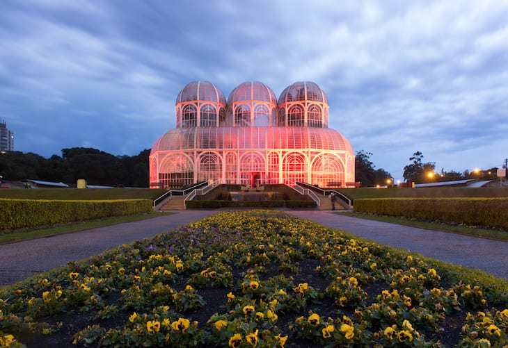
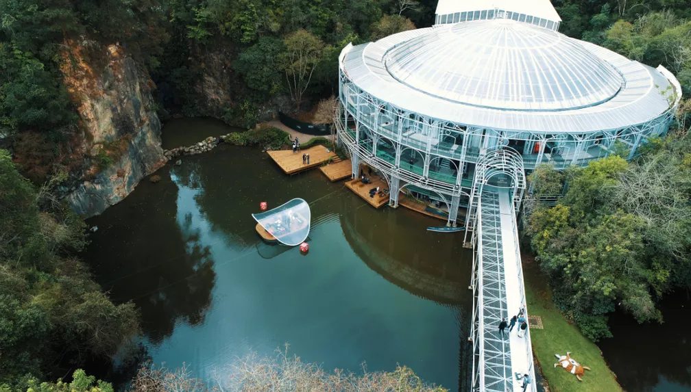
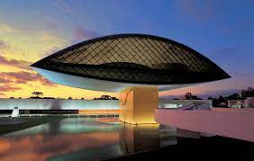

Um dos pontos turísticos mais famosos de Curitiba. Difícil imaginar quem já tenha visitado a cidade e não tenha tirado uma foto em sua estufa de vidro, inspirada no Palácio dos Cristais em Londres.
Com capacidade para mais de 1500 pessoas, o teatro todo de metal construído sobre um lago é outro ponto de turístico bastante conhecido de Curitiba.
Apelidado de Museu do Olho, por possuir exatamente esse formato, o Museu Oscar Niemeyer é um dos principais da cidade, e tem exposições fixas e temporárias para todos os gostos.
